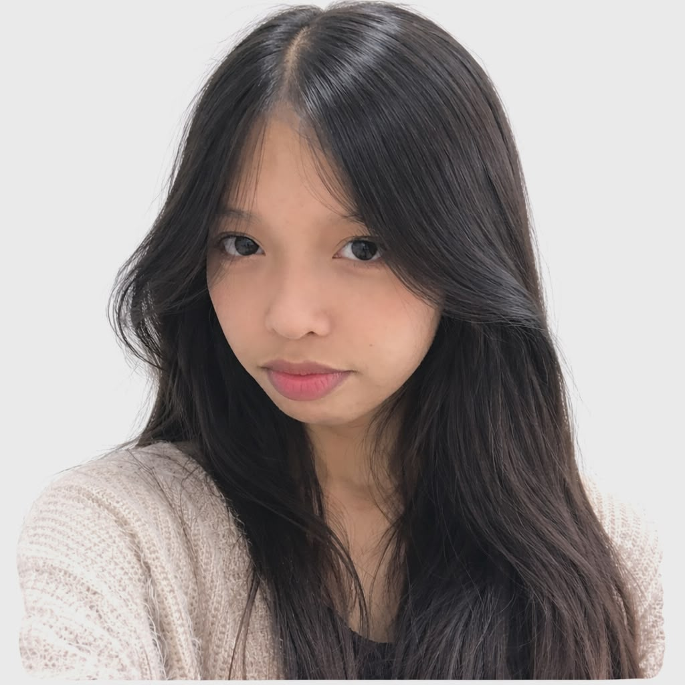

Name:Erish
Student number:251100064
Course and Section: BSCS-1D
I am Erish Gardon, I am 19 years old, 1st year college in Bachelor of Science in Computer Science at Cavite State University Campus-Silang.
I chose this program because it is in demand, Computer Science is also one of my choices when I go to college. My dream job after graduating is to be a UX designer or maybe a Game Designer.
Although I entered this program with limited prior knowledge about computers, I am fully committed to learning and growing in this field.
My hobbies are Drawing, Dancing, Watching movies and series, Play online games.